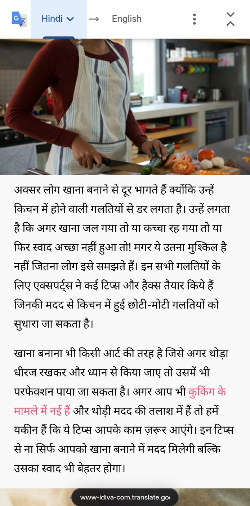
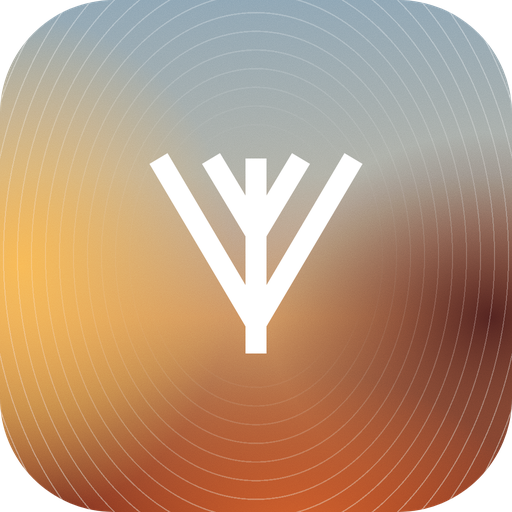
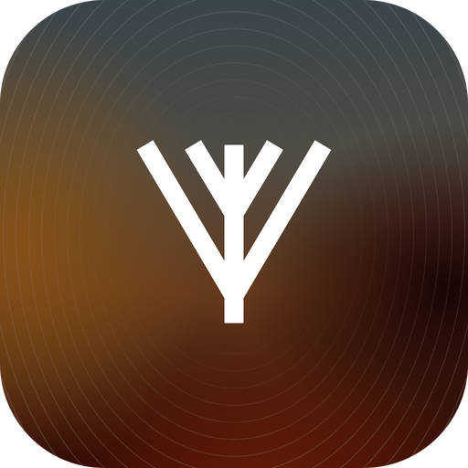

Keep the words. Lose the clutter.
Reader Mode reshapes supported pages into a focused reading view, with controls for type and appearance.


The web is yours to explore. Valley brings thoughtful tools, a distinctive interface and more control into one considered Android browser.
The browser should get out of your way. Then hand you the right tool at the right moment: a calm home screen, a flexible toolbar, and ways to read, search and organise that feel intentional, not crowded.
Four tools you will reach for every day, built into the browser instead of bolted on.
Reader Mode reshapes supported pages into a focused reading view, with controls for type and appearance.
Translate webpage content right in Valley, so information from more corners of the web is easier to understand.

Smart Search brings recent searches and favourite destinations together on a clean, customisable homepage. Type “open flipkart” and you land on Flipkart.


Tab groups and a dedicated overview keep a busy session manageable. Swipe between neighbouring tabs.
The essentials are only the beginning.
Protection is on by default, because a setting nobody turns on protects nobody. No account, no sync, no analytics.
No browser can promise perfect security. Valley is risk reduction, not anonymity.
Install Valley on your Android device using the APK on this page.
Tap the button and save Valley-1.0.apk to your device.
Find the APK in your Downloads folder and open it.
Read Android’s security prompts. Only proceed if you trust the source.
Check the app details, install it, and open Valley.
Android may show additional security checks. Do not bypass warnings you do not understand. Menu names vary by device and Android version.
Install the APK, open it, and make the web a little more yours.
Download for Android